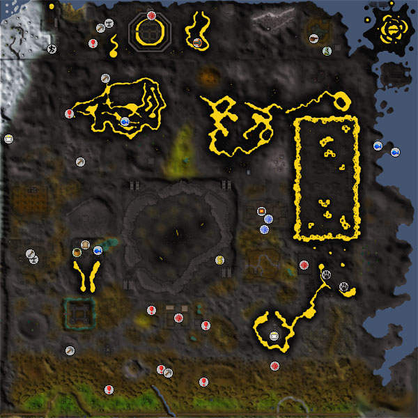
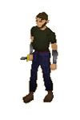
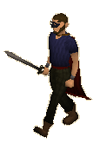
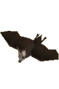
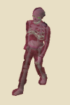

")
The Wilderness
Warning | Introduction | Location | Points of Interest | Revenants | Wilderness Levels
Personalities | Quests | Dangers of the Blasted Land | Miscellaneous
Personalities | Quests | Dangers of the Blasted Land | Miscellaneous
Warning
Above ground, the Wilderness is a dangerous area filled with monsters up to level 305 (and below ground, you might even encounter the Corporeal Beast, with a Combat level of 785!). In addition to this, much of the area is multicombat and almost every creature is aggressive - beware of large groups of creatures intent on an adventurer dinner! Finally, note that the spirits of those slain during the last cataclysm of the god wars do not rest easy, and wander the wastes seeking a target for their rage... These revenants are capable of teleblocking and freezing you, and can attack using melee, Magic or Ranged. Please be aware that revenants are in no way like other monsters, and are much more dangerous than their combat levels might lead you to believe.
In addition, there are a number of restrictions on teleporting out of the Wilderness, so please take careful note of where you are in case you need to make a hasty getaway. For a quick escape from these hellish lands, it is well worth bringing a one-click teleport with you (such as an ectophial or teleportation tablet).
Introduction

In modern days, the land has still not recovered and has become a haven for criminals, violent monsters and those adventurers willing to risk their lives for the rewards the Wilderness offers.
Location

Bold adventurers may wish to cross into the Wilderness, usually from the relative safety of Edgeville or Varrock. Passage can also be found there from several other locations (such as the teleport lever in East Ardougne) or using spells from the Ancient Magicks or Lunar spellbooks.
Points of Interest

What might possess someone to venture into the waste land of the Wilderness is a matter of some debate among philosophers, but surely the wealth and glory that awaits them must be some incentive. Within the Wilderness are great rewards to temper the perils - one can find runite rocks waiting for a miner's pickaxe, runes simply scattered upon the ground, outposts of all kinds... and powerful monsters carrying great loot.
Of special note are the activities scattered about. Calladin helps clans settle their differences in Clan Wars, Kolodion seeks the finest mages in the world to battle in his Mage Arena, Fiara and a cluster of druids guard the Fist of Guthix, and a group of bizarre mystics invite adventurers to the Primordial Realm for Stealing Creation.
The Mage of Zamorak wanders close to Edgeville, helping runecrafters that have helped him by teleporting them to the Abyss.
Some of the most powerful beasts in RuneScape can be found within or beneath the Wilderness, too. The King Black Dragon hoards his wealth below the Lava Maze, and within the deepest regions of the Wilderness the Chaos Elemental distorts nature and space to carve out his own domain.
It should be noted that the lands north of the fence - the Deep Wilderness - are only available to members. Within that area, you can find Kolodion's Mage Arena, the Wilderness Agility course, Ice Plateau and clusters of monsters, pirates and rogues.
Finally, it would be hard to talk about the Wilderness without making reference to Daemonheim, which juts menacingly from the east coast. Here, adventurers can raid ancient dungeons and train their Dungeoneering skill in parties of one to five.
Revenants
 Revenants are vile spirits bound to the lands of the Wilderness following their violent deaths during the god wars. They can never be truly slain, merely banished temporarily before they continue their enraged wandering. They behave like no other monster on RuneScape, and are able to perform a number of surprising tricks.
Revenants are vile spirits bound to the lands of the Wilderness following their violent deaths during the god wars. They can never be truly slain, merely banished temporarily before they continue their enraged wandering. They behave like no other monster on RuneScape, and are able to perform a number of surprising tricks.
The revenants are far more dangerous than their Combat level might suggest, being capable of attacking from all three corners of the combat triangle, as well as freezing their victims and preventing them from teleporting! Overall, a revenant is a much greater threat than other monsters of the same Combat level.
They roam throughout the Wilderness, sometimes stalking alone and sometimes hunting in packs, so you'd better keep a watchful eye out for them while you're sojourning in that barren land.
 The revenants' lethal powers include the ability to 'steal' players from combat against other monsters - even in single-way combat zones. Beyond this, they can heal themselves and cure themselves of poison a limited number of times. If you see a revenant approaching, you'd better run for your life or prepare for a seriously challenging fight.
The revenants' lethal powers include the ability to 'steal' players from combat against other monsters - even in single-way combat zones. Beyond this, they can heal themselves and cure themselves of poison a limited number of times. If you see a revenant approaching, you'd better run for your life or prepare for a seriously challenging fight. The revenants occasionally drop coins, offering the chance of greater rewards depending on their Combat level, and some of them (on members' worlds) might even drop valuable runes, dragon daggers or clue scrolls.
If you find that a revenant has blocked you from teleporting, it will last for five minutes, or until you leave the Wilderness.
Note: Regardless of the type of revenant you are fighting, you do not need a Slayer level to kill them.
Wilderness Levels
Just before entering the Wilderness you will see a ditch that you will need to jump over. When you click on the ditch to do so, you will get a message warning you about the dangers that lie ahead.
Simply click 'Enter Wilderness' to jump over the ditch and continue on your way. The Wilderness does not begin immediately after the ditch; for safety's sake there is a small region on the far side which is outside the Wilderness itself. When you enter the Wilderness, you will see an icon appear on your screen with a level below it:
The Wilderness becomes more dangerous the deeper you go, and you should take special note of the level you are in. The further north you venture, the higher the Wilderness level will be. These indicate the relative danger from revenants, as well as influencing your ability to teleport out of the Wilderness.
The Wilderness level number is very important as it will determine what Combat level you'll have to possess in order to attack revenants, or for them to attack you. The Wilderness level tells you what range of Combat levels you can attack (and can attack you!). This range is measured from your Combat level.
For example, if you have a Combat level of 50 and you're in Level 1 Wilderness, you can only attack revenants one level above (Level 51) and below you (Level 49). This means that revenants between Levels 49 and 51 also have the option to attack you.
So keep in mind that if you are in Level 10 Wilderness and you have a Combat level of 50, you can attack revenants up to ten levels above (Level 60) and below you (Level 40). However, this means that a revenant between Levels 40 and 60 also has the option to attack you, so be careful!
The Wilderness level can also restrict how you can teleport when you are in the Wilderness.
Up to level 30, enchanted dragonstone jewellery, the Pharaoh's Sceptre and grand seed pods from the Gnome Restaurant may be used, and a ring of life will save you if activated. Other forms of teleportation can be used up to level 20. The only exception to this is the use of levers or any form of natural teleports found in the Wilderness. They can be used throughout all levels and areas of the Wilderness.
Please note that the ring of life has certain conditions for use; it will not always teleport you away from battle if you're outmatched in a fight. If you go to under 10% of your health, it will save you and teleport you. If a final hit on your character is greater than 10% of your health, you'll die as normal.
Revenants may sometimes block their victims from teleporting, which will prevent you from teleporting for five minutes (or until you leave the Wilderness). This covers all forms of teleporting mentioned above including other methods such as teleport levers.
Personalities
![[image]](../../img/main/kbase/npc/area_guides/chathead/mage_of_zamorak.gif) The Mage of Zamorak is highly placed within the Zamorakian Magic Institute, and this position makes him guardian of the path to the Abyss. He is a useful man to know if you intend on becoming a master runecrafter, although you have to wonder what price your bargain with him will cost the world in the future...
|
![[image]](../../img/main/kbase/npc/area_guides/chathead/kolodion.gif) Kolodion is master of the Mage Arena and there are few sorcerers with a greater knowledge of the ways of Magic. If you can prove yourself to him, he will grant you powers born from the gods themselves.
|
|
| The Mage of Zamorak can be found just north of Edgeville. | Kolodion can be found in the Mage Arena, in the Deep Wilderness. |
|
Calladin is a warrior of many years' experience. Having tired of hunting dragons or mercilessly leaping upon unsuspecting demons, he now maintains the Clan Wars arena, enabling whole armies to do battle in an organised fashion.
|
The mystics that live just south of the volcano are a strange bunch, led by this eccentric who believes that the revenants are, in fact, holy beings. Sensible people can only guess at what possesses a man to revere the horrors of the Wilderness.
|
|
| Calladin can be found in the Clan Wars challenge hall. | The Head Mystic can be found near the unstable portal to the Primordial Realm, just south of the volcano. |
Quests
The following quest can be started in the Wilderness:
- Spirit of Summer (Members)
- Summer's End (Members)
Dangers of the Blasted Land
As you walk about the desolation of the Wilderness, you may run into some of the following criminals, beasts or ghosts.
![[image]](../../img/main/kbase/npc/area_guides/dark_warrior.gif) The Dark Warriors inhabit a fortress within the Wilderness, where they are free to worship Zamorak and plot wicked deeds. Of course, they are generally quite harmless, but you have to respect any group that manages to maintain a fortress within the Wilderness.
|

Thugs are brutish, callous men who pride themselves on having been excellent bullies at school and lazy curs in adulthood. They are of little concern to all but the freshest adventurers wandering in the Wilderness.
|
|
| Dark warriors can be found in their Fortress. | Thugs can be found in the south of the Wilderness, just north of Varrock. |
![[image]](../../img/main/kbase/npc/area_guides/scorpion.gif) Though the Wilderness is not as sunny nor as sandy as the Kharidian Desert, scorpions find their homes here to bask in the volcanic heat and to feed upon those foolish enough to come unprepared.
|
![[image]](../../img/main/kbase/npc/area_guides/rogue.gif) Rogues are the shells of men cast out by society for their distinct lack of morals. They care little for their own safety and even less for other people's, and merely cluster together out of some vague sense of companionship.
|
|
| Scorpions can be found in a few locations around the Wilderness, but especially in the Scorpion Pit in the Deep Wilderness. | Rogues can be found in the greatest numbers in their castle in the Deep Wilderness. |
![[image]](../../img/main/kbase/npc/area_guides/zombie.gif) The zombies here are the shambling remnants of the poor individuals who were buried in the cursed soil of the Wilderness. They are left mindless and lost, wandering about their graveyard for eternity.
|
![[image]](../../img/main/kbase/npc/area_guides/ghost.gif) There are two varieties of spirit in the Wilderness: the common ghosts of cruelly murdered humans, and the revenant essences of ancient warriors who were bound to these lands by the blast that ended their lives. Ghosts are the more mundane of the two, and easily the weaker.
|
|
| Zombies can be found in the Graveyard of Shadows. | Ghosts can be found in a variety of locations, though the Forgotten Cemetery is a good start. |
![[image]](../../img/main/kbase/npc/area_guides/grizzly_bear.gif) Solitary omnivores that will attack if provoked or hungry, the grizzly bear is a massive beast of fur and claws. While relatively harmless in the Wilderness, they could prove the end of a wounded adventurer or a careless warrior.
|

Unlike the bandits in the Western Desert, the bandits of the Wilderness boast no grand history, nor can they claim to live in the shadow of as grand a structure as Jaldraocht Pyramid. They do, however, have a collection of poorly made shacks and some rather silly names.
|
|
| The bears are found around a few dead woods in the Wilderness. | Bandits live in the Bandit Camp, north of the Dark Warriors' Fortress. |
![[image]](../../img/main/kbase/npc/area_guides/skeleton.gif) Like the zombies and ghosts, skeletons are a relatively common sight in the Wilderness. Most adventurers making their first forays into that dark land will encounter them early on, and those who are not ready may find themselves cut to pieces soon after.
|
![[image]](../../img/main/kbase/npc/area_guides/pirate.gif) Avast! Pirates be the commonest of scoundrels and seadogs, and a surly bunch o' privateers they are, too. Most Wholesale Plunder Merchants be found in Brimhaven or Mos Le'Harmless, but a few be yet found in the north o' the Wilderness, where they be hidin' out from the authorities and a-hoardin' their loot.
|
|
| Skeletons can be found throughout the Wilderness, especially just north of Edgeville. The most dangerous of them can be found in the Wilderness Volcano | Pirates be located in their cunningly named Hideout in the very deep o' the Wilderness. |
|

As you might expect, the Wilderness is a dark and forbidding place, and ominous clouds often blot out the sun for months on end. So it is, then, that it is an ideal land for these great flying rodents to flap about. As they enjoy moving about at height, you may find it more convenient to slay them with Ranged attacks.
|
![[image]](../../img/main/kbase/npc/area_guides/giant_spider.gif) Giant spiders are a common sight around RuneScape, and are generally quite harmless. The spiders you might encounter in the Wilderness are by no means the most dangerous foe you could stumble across, but they are rarely solitary creatures.
|
|
| Giant bats are located in the wastes between the Mage Arena and the Pirates' Hideout. | Giant spiders can be found scuttling over an ancient burial mound to the west of the Demonic Ruins. |
![[image]](../../img/main/kbase/npc/area_guides/black_unicorn.gif) The black unicorn is a masterpiece of evil. It cares for nothing but itself and will use its horn gladly. Luckily, most adventurers who journey into the Wilderness should be capable of dealing with it.
|
![[image]](../../img/main/kbase/npc/area_guides/hill_giant.gif) Massive, brutish beasts, hill giants are mercifully remarkably feeble for creatures of their stature. They lack the resilience of their moss and ice cousins, but are generally excellent prey for young adventurers looking to enhance their combat skills. Having said that, the Wilderness is probably not the best place for such training...
|
|
| The black unicorn can be found in the woods south-west of the volcano. | Hill giants gather north-east of the Chaos Temple, where black salamanders can be hunted. |
![[image]](../../img/main/kbase/npc/area_guides/hobgoblin1.gif) Hobgoblins are found in most areas of RuneScape. They are basically a tougher version of goblins, generally using spears to attack.
|
![[image]](../../img/main/kbase/npc/area_guides/king_scorpion.gif) The largest strain of the scorpion genus, the king scorpions feel most at home at high temperatures. Strong venom bubbles within the sharp hook of its tail, while vice-like pincers look for fleshy adventurers to grapple with. Particularly vulnerable to Magic attacks.
|
|
| Hobgoblins mill about as ramshackle guards of the runite mine south-west of the Lava Maze. | King scorpions roam the top level of the Lava Maze. |
![[image]](../../img/main/kbase/npc/area_guides/black_knight.gif) Black Knights are always plotting their next move against the White Knights. Aside from lurking in their castle north of Falador, they seem to be trying to navigate the Lava Maze... but seem stuck near the entrance to the south.
|
![[image]](../../img/main/kbase/npc/area_guides/deadly_red_spider.gif) Tougher than the giant spiders, deadly red spiders haven't earned their name letting adventurers walk by: they will give you a tough fight if you are unprepared. As this is a multicombat area, be careful you don't get outnumbered quickly! Beware, also, of their poisonous fangs - deadly if you're caught by a revenant!
|
|
| Deadly red spiders can be found north of the Lava Maze. |
![[image]](../../img/main/kbase/npc/area_guides/white_wolf.gif) White wolves are dangerous beasts, and more than likely to cause trouble for people on their first journey to the Wilderness Agility Course. They survive the cold of the region by gorging on the flesh of those foolish enough to come unprepared.
|
![[image]](../../img/main/kbase/npc/area_guides/moss_giant.gif) Moss giants are commonly seen on the surface of RuneScape, and a sizeable number have found their way into the Wilderness, where they and their beards wait for adventurers to disturb them. Young adventurers find that they have a rather delicious range of drops when slain.
|
|
| White wolves wait for clumsy adventurers to slip from the balance pole at the entrance to the Wilderness Agility Course | Moss giants (and their beards, of course) can be found between the Lava Maze and Red Dragon Isle. |
![[image]](../../img/main/kbase/npc/area_guides/chaos_dwarf1.gif) Chaos dwarves like causing chaos! They are more belligerent than the Drunken Dwarf, and twice as likely to carry an axe. Chaos dwarves are known to drop the 'muddy key' which opens a chest deep in the Wilderness holding treasures to reward those brave enough to take the journey.
|
![[image]](../../img/main/kbase/npc/area_guides/ice_giant.gif) Though his blades may be sharp, his mind certainly is not. The ice giant, tall and thunderous with icicles for a beard, is quite easy to avoid on your way through the deeper reaches of the Wilderness. Once confronted, however, this surly and none-too-clever oaf will make short work of you with his sword, slashing and blindly pummeling. This lofty foe is prone to fire, Ranged and Magic attacks.
|
|
| Chaos dwarves can be found south-east of Red Dragon Isle. | Ice giants can be found on the ice plateau in the north-west of the Wilderness. |
![[image]](../../img/main/kbase/npc/area_guides/ice_warrior.gif) A spirit of elemental magic, the ice warrior feels compelled to patrol the icy reaches of the Wilderness. This melee fighter is composed of ice and as such is vulnerable to fire and shattering crush attacks. Also weak to Magic attacks, the warrior will often leave runestone drops as his elemental spirit evaporates.
|
![[image]](../../img/main/kbase/npc/area_guides/ice_spider.gif) Ice spiders are weird creatures that seem to be made wholly of the icy land they inhabit. Their bite is nasty and they are quite resilient to stabbing, but fire and assorted magical attacks should be able to put them in their place.
|
|
| Ice warriors can be found on the ice plateau in the north-west of the Wilderness. | Ice spiders can be found on the eastern fringe of the ice plateau in the north-west of the Wilderness. |
![[image]](../../img/main/kbase/npc/area_guides/dire_wolf.gif) These wolves are the wolves that hunt at midnight, seeking the blood of cowards and fools. They are aggressive and constantly drool in anticipation of an easy kill. Thankfully for most adventurers, they have not been bred to kill in the same way as the ice wolves that guard the entrance to the God Wars Dungeon.
|
![[image]](../../img/main/kbase/npc/area_guides/green_dragon.gif) These Wilderness stalwarts are a distant relation to the mighty Elvarg of Crandor, although far more agreeable. These particular green dragons are aware of the King Black Dragon and his domain, so avoid the western area of the Maze. Less well defended against stab and Ranged attacks, the green dragon is a pale green shadow of Elvarg's might.
|
|
| Wolves can be found south of the Scorpion Pit, close to the Chaos Elemental. | The green dragons can be found in a few secluded valleys in the southern half of the Wilderness. |
|

An Ankou's touch is as cold as the void, and drains life with the merest graze of its fingertips. They are skinless creatures returned from the dead by unnatural sorcery.
|
![[image]](../../img/main/kbase/npc/area_guides/lesser_demon.gif) Forced out of the lower echelons of the Lava Maze by the territorial greater demons, these wingless versions have found their way to the Wilderness surface. Guarding the entrances to these lower levels, the lesser demons are biding their time till these areas can be regained.
|
|
| Ankou can be found in the Wilderness Volcano. | Lesser demons can be found within the fences that guard access to the King Black Dragon's lair, just west of the Lava Maze, and in the Wilderness Volcano. |
![[image]](../../img/main/kbase/npc/area_guides/greater_demon.gif) These looming forsaken are one of the great dangers of the Wilderness; although by no means are they the foulest beast you might encounter. Curving scimitar-like claws and thick hides of pure evil make them a strong adversary for those who do not dabble in the magical arts, while a hunger for new souls makes them an unlikely foe to be bypassed with a well-timed sprint.
|
![[image]](../../img/main/kbase/npc/area_guides/hellhound.gif) Wilder than your household pet by far, hellhounds will not obey your every command, nor are they man's best friend. Hellhounds use their powerful front claws to rake their opponents and gouge flesh, making them particularly strong melee opponents.
|
|
| Greater demons can be found loitering about the Demonic Ruins and in the Wilderness Volcano. | Hellhounds can be avoided by steering clear of the area south-east of the Deserted Keep in the Deep Wilderness, and by keeping well away from the Wilderness Volcano. |
|
The damned souls of the legions that died in the final cataclysm of the god wars are bound to the lands of the Wilderness, unable or unwilling to ever go into the gentle sleep of death. As you run through the desolation of these dark lands, you are likely to be set upon by these unnatural fiends - be warned: they can freeze you, prevent you from teleporting and can unleash hefty damage!
|
![[image]](../../img/main/kbase/npc/area_guides/red_dragon.gif) Red dragons are powerful enemies whose scales are the colour of blood. They are quite social creatures, like most other dragons, and have a tendency to cluster in the same region. Red dragons are best attacked with stabbing weapons or Ranged attacks.
|
|
| Revenants may rise from their uneasy graves anywhere within the Wilderness! | Red dragons are best avoided by steering well clear of Red Dragon Isle. |
![[image]](../../img/main/kbase/npc/area_guides/chaos_elemental.gif) Who can say where the Chaos Elemental names its origin? Its existence is a mystery and an insult to the laws of nature. Whatever its source, the Chaos Elemental is a powerful and frustrating opponent, capable of stripping you of your armour, hurling you vast distances in an instant and slaying you without thought of the ethics of such an act. Beware this beast!
|
|
| The Chaos Elemental warps the laws of physics around it to the west of the Rogues' Castle. |

The Corporeal Beast
Those who have completed Summer's End will be aware of the apparent destruction of the terror-inspiring Spirit Beast. They, too, may comprehend enough of the connection between the Wilderness and the Spirit Beast's Realm to realise that it is not gone... No, the Spirit Beast has been given a solid form, and although it is nowhere close to as powerful as it might have been, it is still the most powerful beast in all of RuneScape, stronger even than TzTok-Jad. Its greatest weakness, however, is that its new home is a multicombat area, allowing all manner of vengeful adventurers to assault it en masse, hoping for a small piece of the prize...
The Corporeal Beast can be found in the mine north of the ruined farm, provided you have completed Summer's End.
Miscellaneous
- There are many items to be found littering the Wilderness, waiting for the greedy to follow the trail of items to their deaths... Of course, if you have no fear, you can find a great range of runes, a few planks, scraps of armour and a number of weapons.
- The Chaos Elemental, awesome and powerful as he is, occasionally drops a dragon two-handed sword.
- If you have completed Spirit of Summer, you will receive a ring that doubles the chances of a revenant dropping one of its less common items. In addition, the ring can be used to travel several parallel areas of Wilderness.
- The Corporeal Beast attacks using every Combat style, as well as a number of attacks that defy description cannot be protected against using Prayer. In addition to this, the dark core frequently leaps from its body to steal some of your life to feed its master.
- Fighting the Corporeal Beast is not without rewards, as it is known to drop the holy elixir and sigils required to enhance a spirit shield.

More articles in
Other
|
|